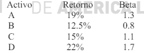
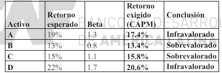

El Modelo de Valoración de Activos de Capital (CAPM) es una herramienta esencial en finanzas para determinar el retorno exigido sobre un activo, considerando su nivel de riesgo en relación con el mercado en su conjunto. El modelo propone que el retorno de un activo debe compensar al inversor no solo por el tiempo que el dinero está invertido y el riesgo libre de interés, sino también por el riesgo adicional (riesgo sistemático) asociado con el activo específico. Los pasos para aplicar el CAPM en la práctica incluyen estimar el tipo libre de riesgo, usualmente a través de la rentabilidad de bonos del gobierno a largo plazo, determinar la beta del activo que refleja su volatilidad comparada con el mercado, decidir sobre la prima de riesgo de mercado basada en la diferencia entre el retorno esperado del mercado y el tipo libre de riesgo, y finalmente combinar estos elementos para calcular el retorno exigido. Este proceso, aunque ampliamente aceptado, enfrenta críticas relacionadas con la dificultad en la precisión de las mediciones y la relevancia de las suposiciones en diferentes contextos de mercado.
El tipo libre de riesgo juega un papel crítico en el cálculo del CAPM, actuando como la base sobre la cual se adicionan los riesgos específicos del mercado y del activo. La estimación de este tipo se deriva generalmente de los bonos del gobierno considerados libres de riesgo, como los bonos del Tesoro de EE. UU. a diez años. Para determinar el tipo libre de riesgo aplicable, se observa el yield to maturity (YTM) de estos bonos, ajustándolo según el plazo de inversión deseado. Por ejemplo, si la inversión se planea mantener por un período extenso, se consideraría apropiado un bono a más largo plazo para alinear el horizonte de tiempo del tipo libre de riesgo con el de la inversión. Este enfoque asegura que el tipo utilizado refleje adecuadamente las condiciones de mercado y las expectativas futuras sin riesgo.
La beta de un activo indica su sensibilidad a los movimientos del mercado; un activo con una beta superior a uno tiene un riesgo mayor al promedio del mercado, mientras que una beta menor a uno indica un riesgo inferior al promedio. La medición precisa de la beta es fundamental y se logra analizando la relación estadística entre los retornos del activo y los del mercado durante un período significativo. Este análisis incluye el cálculo de la varianza y la covarianza de los retornos del activo con respecto al mercado, utilizando datos históricos de precios. Estos cálculos permiten a los inversores y analistas financieros entender mejor el comportamiento del activo en diferentes condiciones de mercado y ajustar sus expectativas de retorno en consecuencia.
La prima de riesgo de mercado es la rentabilidad adicional que los inversores requieren para invertir en el mercado en general en lugar de en una inversión libre de riesgo. La estimación de esta prima puede ser compleja y generalmente involucra un análisis de las expectativas de rentabilidad del mercado basado en datos históricos y proyecciones futuras. Los analistas pueden emplear diversos métodos, incluyendo encuestas a inversores institucionales, análisis de las rentabilidades pasadas del mercado y modelos que relacionan las rentabilidades del mercado con indicadores económicos. Aunque estos métodos proporcionan una guía, la naturaleza volátil de los mercados y la variedad de factores económicos implican que la prima de riesgo puede variar significativamente con el tiempo.
Una vez que se han estimado los componentes del CAPM, el retorno exigido se puede calcular fácilmente sumando el tipo libre de riesgo, el producto de la beta por la prima de riesgo de mercado. Este retorno exigido es crucial para la valoración de activos, proporcionando la tasa de descuento para los flujos de efectivo futuros esperados del activo. Los analistas utilizan este retorno para determinar el valor presente de acciones, bonos, y otros activos financieros, permitiendo así a los inversores tomar decisiones informadas sobre la compra o venta basadas en la valoración estimada en comparación con el precio de mercado actual.
A pesar de su amplia utilización, el CAPM no está exento de limitaciones. Las críticas al modelo incluyen su dependencia de la beta, que puede no ser constante a lo largo del tiempo, y el supuesto de que los mercados son siempre eficientes. Además, el modelo no toma en cuenta múltiples fuentes de riesgo que pueden afectar el retorno de un activo. Como respuesta, han surgido modelos multifactoriales que consideran múltiples factores de riesgo, como los modelos de tres factores de Fama y French. Estos modelos intentan proporcionar una explicación más completa de los retornos esperados mediante la inclusión de factores adicionales como el tamaño de la empresa y las ratios de valoración, ofreciendo así una alternativa más robusta al CAPM para los analistas que buscan capturar una gama más amplia de riesgos en la valoración de activos.
El tipo libre de riesgo es del 7% y el retorno esperado de la cartera de mercado es del 15%. Dados los datos de retorno esperado y beta de los siguientes activos:
¿Qué activos están sobrevalorados y cuáles infravalorados?
Este ejercicio es una aplicación directa de la fórmula del CAPM. Mediante la fórmula hallamos el retorno que habría que exigir a los distintos activos. Si ese retorno exigido es menor que el retorno esperado, el activo está infravalorado (el activo es muy barato, o da un retorno mayor al que “debería dar” en función de su riesgo sistemático). Si ese retorno exigido es mayor que el retorno esperado, el activo está sobrevalorado (es muy caro, o da un retorno menor del que “debería dar”).
Es bueno explicar que, en los dos casos, el precio del activo tendería a “moverse” para corregir la mala valoración: el activo barato, que ofrece un retorno esperado alto, subiría de precio al experimentar un aumento de demanda (y, por ello, el retorno esperado bajaría hasta que se igualara al exigido); el activo caro, que ofrece un retorno esperado bajo, bajaría de precio al experimentar un descenso de demanda (y, por ello, el retorno esperado subiría hasta que se igualara al exigido).
Aplicando la fórmula del CAPM para hallar los retornos exigidos
Ri = Rf + βi × (Rm - Rf) = 7% + βi × (15%-7%)
